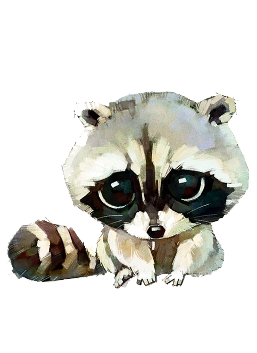

RaccoonZone
Bienvenidos al mundo de los mapaches, esos simpáticos y curiosos animales que han cautivado a millones de personas en todo el mundo. En esta página web encontrarás toda la información que necesitas sobre estos fascinantes mamíferos, desde sus características físicas y hábitat natural, hasta sus comportamientos y curiosidades más sorprendentes.
Los mapaches son animales extremadamente inteligentes y adaptables, capaces de sobrevivir en una gran variedad de entornos, desde bosques y montañas hasta áreas suburbanas y urbanas. En esta página, descubrirás todo lo que necesitas saber sobre estos animales, incluyendo sus características físicas, su dieta, su comportamiento y mucho más.
No importa si eres un amante de la naturaleza, un estudiante curioso o simplemente alguien que busca aprender más sobre el mundo natural que nos rodea, ¡esta página es para ti! Así que ponte cómodo y prepárate para adentrarte en el fascinante mundo de los mapaches.
¡Gracias por visitarnos!
